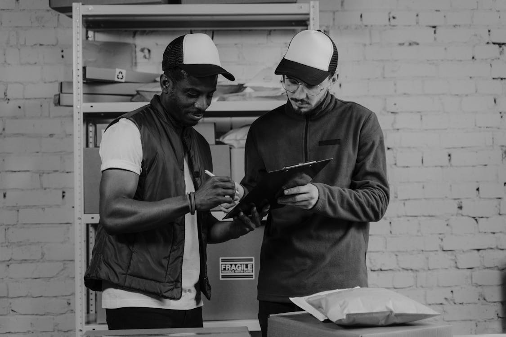

Tentang SampaiKilat
Paket membawa lebih dari barang.
Karena itu perjalanan harus jelas, bantuan harus mudah ditemukan, dan janji pengiriman tidak boleh samar.
Fakta operasional
Yang benar-benar tercatat di sistem kami.
Angka di bawah ini berasal dari data operasional SampaiKilat, bukan perkiraan pemasaran.
Daftar posisi paket
Perjalanan sebuah paket hanya dapat berada di salah satu dari enam posisi berikut.
| Kode | Posisi | Jenis |
|---|---|---|
| PS-001 | WH Tangerang | Gudang |
| PS-002 | WH Jakarta | Gudang |
| PS-003 | WH Depok | Gudang |
| PS-004 | WH Bekasi | Gudang |
| PS-005 | WH Bogor | Gudang |
| PS-006 | SAMPAI | Sampai |
Sumber angka: tabel posisi_paket (6 baris), tabel supir (28 kendaraan di 16 daerah), dan tabel jenis_pembayaran (Tunai, Non-tunai).
01 / Cara kami bekerja
Kecepatan berarti tahu apa yang terjadi selanjutnya.
SampaiKilat dibangun sebagai layanan pengiriman untuk kebutuhan personal dan usaha. Kami menghubungkan proses pencatatan, transit, dan pelacakan dalam satu alur yang bisa dipahami pengirim maupun penerima.
Jalur darat dan udara dipilih sesuai tujuan. Setiap perpindahan paket dicatat agar status terakhir tetap terlihat oleh pelanggan, bukan tersimpan hanya untuk tim operasional.
Yang tidak kami tampilkan: cerita pendirian, jumlah paket yang pernah dikirim, jumlah karyawan, penghargaan, dan testimoni. Datanya tidak ada di sistem, jadi kami tidak mengarangnya.
Prinsip layanan
Tiga hal yang kami jaga.
-
01
Status yang jelas
Nomor resi menghubungkan pelanggan dengan riwayat perjalanan paket, dari gudang pertama sampai posisi SAMPAI.
-
02
Proses yang aman
Data pengiriman dikelola lewat alur staf yang terlindungi dan dapat ditelusuri.
-
03
Bantuan yang dekat
Ketika perjalanan tidak sesuai rencana, pelanggan tahu harus menghubungi siapa dan kapan saja.
Catatan keterbukaan
Belum ada testimoni, penghargaan, atau angka jumlah paket
Halaman ini hanya menampilkan data yang tercatat di sistem: posisi paket, jalur pengiriman, jenis pembayaran, dan kanal layanan pelanggan. Karena sistem belum menyimpan testimoni, penghargaan, tahun pendirian, jumlah karyawan, atau jumlah paket, semuanya tidak kami tampilkan.
Tanya layanan pelangganSudah punya resi?
Lihat posisi paket terakhir.
Masukkan nomor resi Anda pada halaman Cek Resi untuk melihat posisi terakhir dan riwayat perjalanan paket.